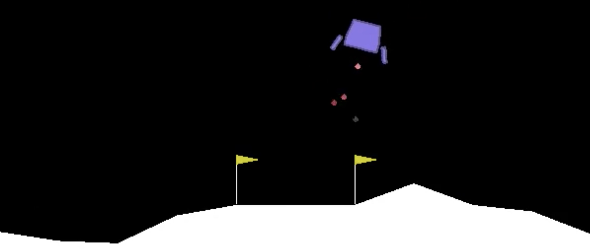

**[CMSC389F - Reinforcement Learning](/)**
For any questions or concerns about the course, please contact Johann Miller () and/or Dhruv Mehta ().

(#) Links
- [Piazza](https://piazza.com/umd/fall2018/cmsc389f)
- [Grades](https://grades.cs.umd.edu/)
- [Testudo](https://app.testudo.umd.edu/soc/search?courseId=CMSC389f§ionId=&termId=201808&_openSectionsOnly=on&creditCompare=&credits=&courseLevelFilter=ALL&instructor=&_facetoface=on&_blended=on&_online=on&courseStartCompare=&courseStartHour=&courseStartMin=&courseStartAM=&courseEndHour=&courseEndMin=&courseEndAM=&teachingCenter=ALL&_classDay1=on&_classDay2=on&_classDay3=on&_classDay4=on&_classDay5=on)
(#) Modules
- [Week 1: Introduction](week-1-introduction/week-1.md.html)
(#) Syllabus
This course provides an overview of the key concepts and algorithms of Reinforcement Learning, an area of artificial intelligence research responsible for recent achievements such as AlphaGo and robotic control. Students will implement learning algorithms for simple tasks such as mazes and pong games.
## Course Information
### Time and Location
Fridays 2pm - 2:50pm,
[EGR](https://www.google.com/maps/place/Glenn+L.+Martin+Hall,+4298+Campus+Dr,+College+Park,+MD+20742/@38.9888634,-76.9383526,19.16z/data=!4m5!3m4!1s0x89b7c6a2c70bb931:0xc58445ebbfc261f8!8m2!3d38.988892!4d-76.9381634) 2116
### Instructors
Facilitators:
- Johann Miller (jkmiller@umd.edu)
- Dhruv Mehta (dhruvnm@umd.edu)
Faculty advisor: [James Reggia](http://www.cs.umd.edu/~reggia/)
### Office Hours
By appointment. We will establish hours during the take-home midterm and final project.
### Textbook
*Reinforcement Learning: An Introduction* by Sutton and Barto (**optional**, available online)
## Schedule
| Week | Topic |
| ----|----- |
| 1 (8/31) | Introduction to RL
| 2 (9/7) | Value Approximation: 10-Armed Testbed
| 3 (9/14) | OpenAI Gym
| 4 (9/21) | Markov Decision Processes
| 5 (9/28) | Implementing RL with Numpy
| 6 (10/5) | Value Iteration
| 7 (10/12) | Policy Interation
| 8 (10/19) | Q Learning I
| 9 (10/26) | Q Learning II
| 10 (11/2) | Principal Policy Optimization I
| 11 (11/9) | Principal Policy Optimization II
| 12 (11/16) | Introduce Final Project
| 13 (11/23) | **Thanksgiving Break**
| 14 (11/30) | Applications of RL
| 15 (12/7) | Demos
## Grading
- 40%: Take-home Midterm
- 40%: Final Project
- 20%: Assignments
### Take-home Midterm
The midterm will test material from the first half of the class. It will be open-note, but collaboration is not allowed. We will schedule office hours during the midterm to in order to clarify questions or review material.
### Final Project
Either solo or in pairs, students will create agents for an OpenAI environment and demo their agent on the final day of classes. A rubric will be provided when once this project is assigned.
### Assignments
We will give a mix of in-class and short homework assignments. The assignments will vary between problem sets and short coding problems. Assignments will be given every other week.
## Extra Resources
- [David Silver's lecture series](http://www0.cs.ucl.ac.uk/staff/d.silver/web/Teaching.html)
- [Standord CS231n RL lecture](https://www.youtube.com/watch?v=lvoHnicueoE)
- [Python code for Sutton and Barto's text](https://github.com/ShangtongZhang/reinforcement-learning-an-introduction)
## Academic Policies
### Academic Integrity
Note that academic dishonesty includes not only cheating, fabrication, and plagiarism, but also includes helping other students commit acts of academic dishonesty by allowing them to obtain copies of your work. In short, all submitted work must be your own. Cases of academic dishonesty will be pursued to the fullest extent possible as stipulated by the [Office of Student Conduct](https://www.studentconduct.umd.edu).
It is very important for you to be aware of the consequences of cheating, fabrication, facilitation, and plagiarism. For more information on the Code of Academic Integrity or the Student Honor Council, please visit [here](http://www.shc.umd.edu).
### Excused Absence and Academic Accommodations
See the section titled "Attendance, Absences, or Missed Assignments" available [here](http://www.ugst.umd.edu/courserelatedpolicies.html).
### Disability Support Accommodations
See the section titled "Accessibility" available [here](http://www.ugst.umd.edu/courserelatedpolicies.html).
### Course Evaluations
If you have a suggestion for improving this class, don't hesitate to tell the instructor or TAs during the semester. At the end of the semester, please don't forget to provide your feedback using the campus-wide CourseEvalUM system. Your comments will help make this class better.